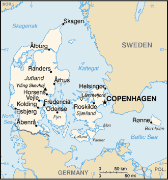

I had the pleasure of visiting HC Anderson's home in Odense, on the island of Fyn. Odense is the third largest city in Denmark, and Fyn is just over the big belt from Sjælland. Confused? See the map:

Look in the middle. ;-)H.C. Anderson's house stands near the city center, now used as a museum. Inside, a series of exhibits show not only the history of his life, but also the how far his stories traveled. His works have been translated into many languages, ranging from Russian to Spanish to Neplaese to Swahili. The street on which his house still stands is quite similar to many other central streets of famous Danish towns --- it is well-preserved.
As the original house is quite small (as are many Danish homes, even today), an addition has been added to house the gift shop, some of the larger exhibits, and a rather odd grouping of modern art.
H.C.'s feet seem to be quite big.
They even had a wooden statue of H.C. so you could see just how tall he really was. Unlike many other museums, they didn't seem to mind if you poked it, prodded it, and the like. Quite odd.
They even let dorky Americans take pictures in front of it. These are all kids in the program I studied at. As you can see, we had not yet embraced European fashion. That came later. Had this picture been taken a little bit later in the year, there would've been pointy toed shoes and all.
I decided I would take two pictures here to illustrate why flashes on digicams (and their being automatic) is absolutely evil. The first picture is with a flash. The second is without. Without pre-flash and flash exposure calculation (which most digital cameras lack), the flash is just, well, evil. Flash photography is hard, and a Canon Powershot S400 just doesn't quite cut it.
Adam can be reached at adam dot morley at gmail dot com